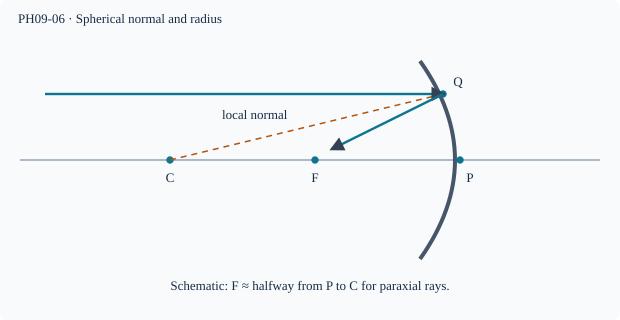

Prerequisite bridge
PH09-01
Before starting, identify the reference frame, directed rays, units and applicable geometric assumptions. Unbound prerequisites remain provisional.
Connected textbook foundation (preserved from PR #5)
7. The geometry of spherical mirrors
A spherical mirror is a portion of a curved reflecting surface. Its pole is the midpoint on the principal axis; its centre of curvature is the centre of the original sphere. The local normal at a point of reflection points toward the centre of curvature.
For paraxial rays near the axis, a concave mirror can converge rays from a distant object toward a principal focus; a convex mirror makes reflected rays diverge as if from a virtual focus behind the mirror. In the paraxial approximation, the focal length magnitude is about half the radius of curvature, f\approx R/2. This is not exact for rays far from the axis; spherical aberration is a model limit.
Build and check the model
The normal at a spherical mirror point passes through the centre of curvature C. Pole P is the axis intersection; radius R=PC. For an axial parallel ray at height h, geometry gives a normal angle α with sin α=h/R; the reflected ray turns by 2α. In the paraxial limit sin α≈tan α≈α, giving axial focus at approximately R/2 from P. Finite aperture rays do not in general cross at exactly the same point.
Worked anchor
For R=40 cm, paraxial f=20 cm in magnitude. A concave mirror with h=2 cm has h/R=0.05; approximation is much better than h=20 cm (ratio 0.5).
Condition and limiting check
For a convex mirror the focus is virtual behind the surface; the geometric magnitude relation is still paraxial.
Misconception repair
C is not generally the focus, and R/2 is not exact for all ray heights.
Reasoning diagram

Self-check before transfer
A spherical mirror has radius magnitude 36 cm. Estimate paraxial focal length magnitude and state why a wide beam may not obey it exactly.
Check the reasoning
|f|≈18 cm. The small-angle approximation is imperfect for marginal rays, which can intersect the axis at different positions.
The next page contains fresh authored transfer, not an examination reproduction.
Source and figure status
Curriculum pointer CBSE10; candidate scope only. Preserved chapter manuscript. An original subtopic-specific SVG is attached above. Scientific figure and teaching-sufficiency reviews remain HOLD.